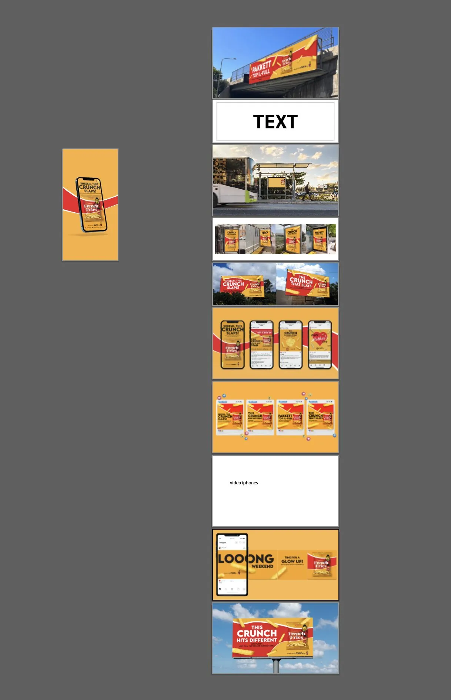
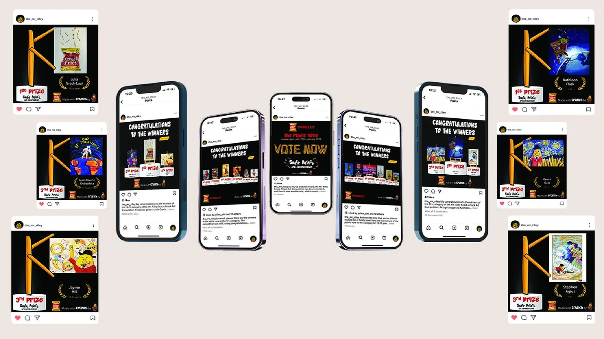
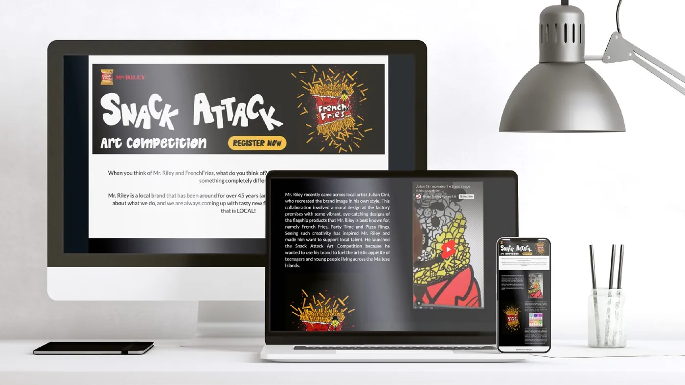
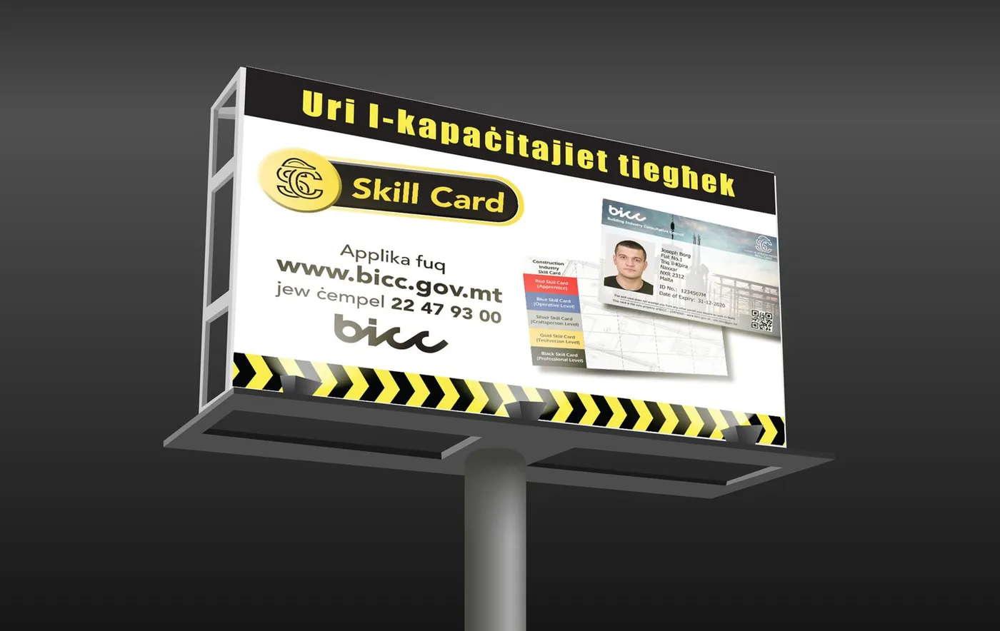
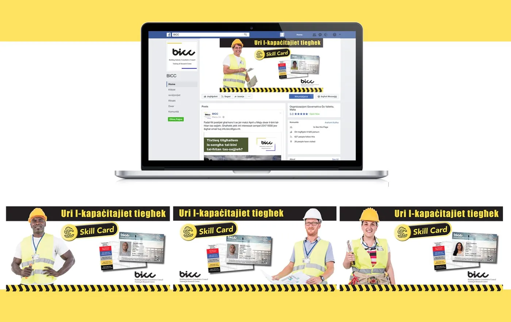
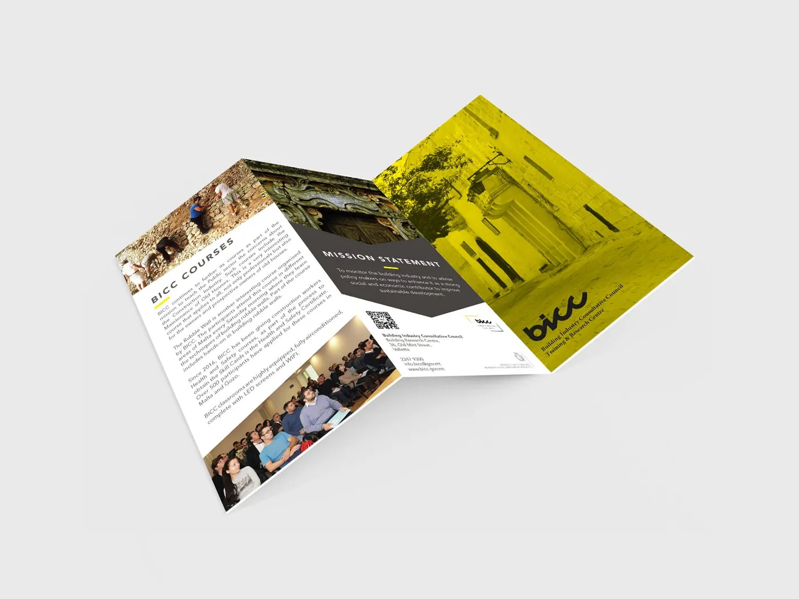
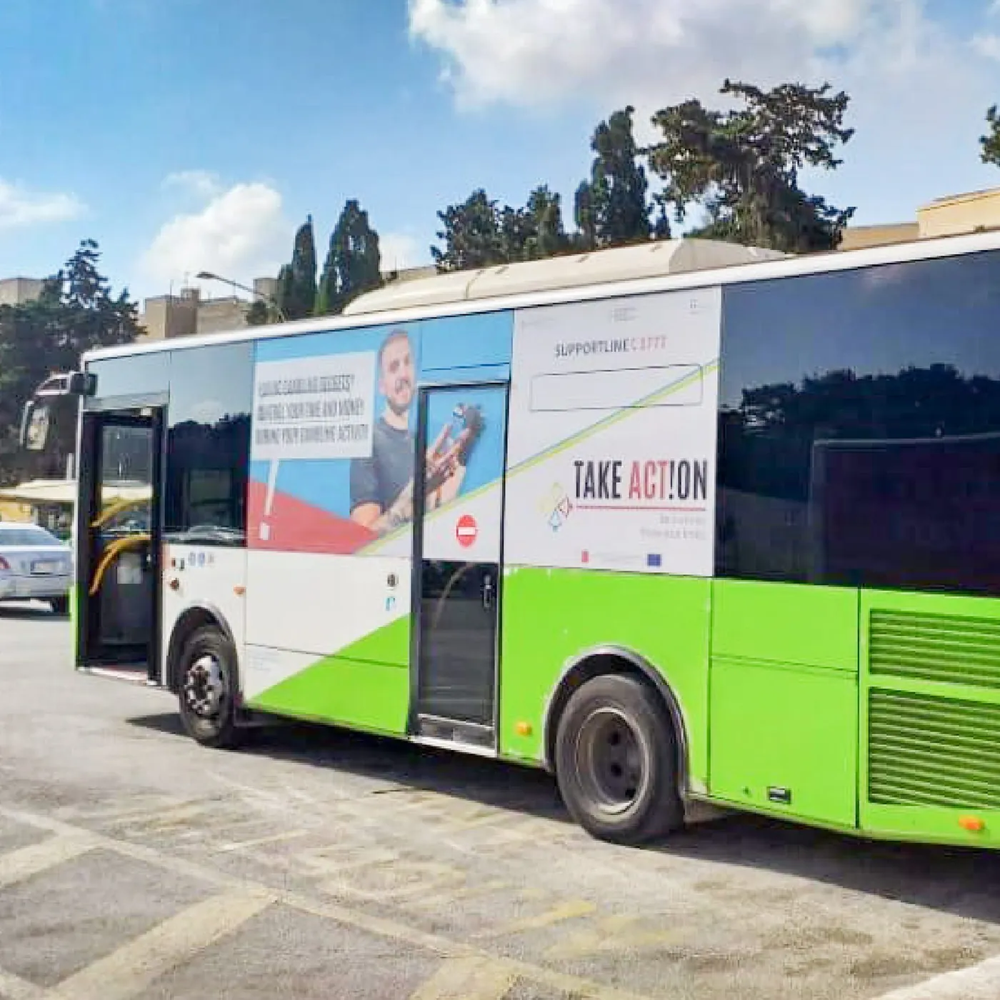
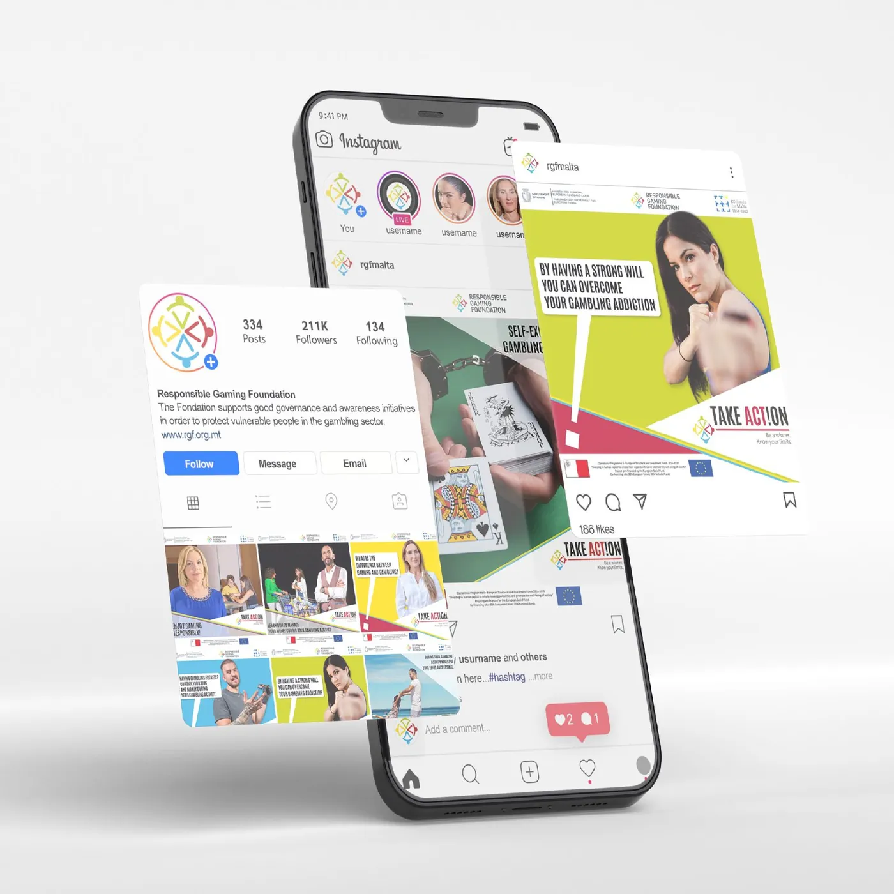
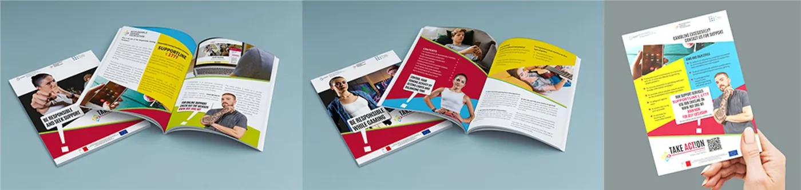
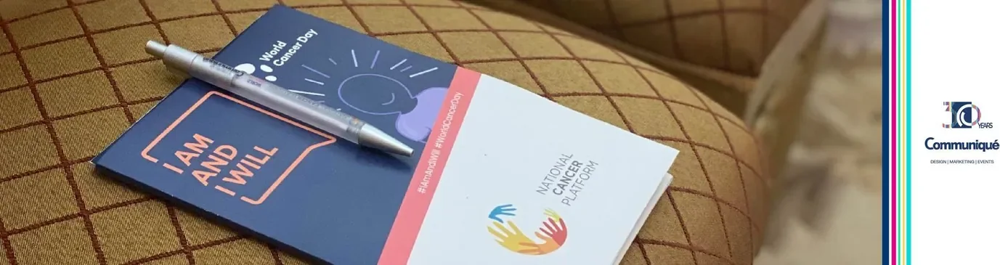

שישה מותגים, כל המדיות: עיצוב קמפיינים בסוכנות במלטה
ב-Communiqué ניהלתי את העיצוב של רשתות חברתיות, אתרים וקמפיינים בגוגל ובמטא של יותר מ-20 מותגים, משלט החוצות בכביש ועד הפוסט בפיד. שישה קמפיינים של שישה מותגים מראים איך כל רעיון עובר בין חוצות, דפוס, רשתות חברתיות ואתר.
בריף, קונספט וכל פורמט
קמפיין ב-Communiqué מתחיל בבריף של הלקוח ומסתיים בסט חלקים לכל מדיה שהלקוח קונה: שלטים ואוטובוסים, עלונים ופרוספקטים, פוסטים בפייסבוק ובאינסטגרם, באנרים לאתר ווידאו קצר. התפקיד שלי היה להפוך את הקונספט למערכת שמחזיקה בכולם, ולתת את הבריף ולבדוק את המתמחים שהפיקו את ההתאמות.
קמפיין הוא לא תמונה מרכזית אחת. זה אותו רעיון ששורד שלט של 12 מטרים וריבוע של 1,080 פיקסלים.
Pakkett French Fries: "Crunch"
השקה של חטיף. הקראנץ' הוא המוצר, ולכן הקראנץ' הוא הקמפיין: צהוב ואדום חזקים, הצ'יפס שוברים את המסגרת, טקסט במלטזית על הכביש ומשפטים קצרים בנייד. חוצות, רשתות ופריסת וידאו.



Mr. Riley: תחרות אמנות "Snack Attack"
אקטיבציה לצרכנים של החטיפים של Mr. Riley: תחרות אמנות שקודמה ברשתות ובדף נחיתה, עם מערכת חזותית לשלושה שלבים: הקול הקורא, "הצביעו עכשיו" והכרזת הזוכים.


החליקו הצידה או השתמשו בחצים. הקישו על צילום כדי להגדיל אותו.
BICC Skill Card: כרטיס לעובדי בניין
קמפיין של Building Industry Consultative Council כדי שעובדי הבנייה יבקשו את ה-Skill Card. השפה החזותית באה מאתר הבנייה עצמו: צהוב ושחור של סרט אזהרה, עובדים עם וסט זוהר והכרטיס כגיבור. שלט, פייסבוק, עלון, פוסטר, מכתב ומודעה בעיתון, עם טקסט במלטזית.



החליקו הצידה או השתמשו בחצים. הקישו על צילום כדי להגדיל אותו.
RGF: "Take Action"
קמפיין מודעות של Responsible Gaming Foundation. שלט "Take Action" עוצר אותך באוטובוס, בפרוספקט ובפיד; הדמיית דף האתר, הפוסטים והמרצ'נדייז עוקבים אחרי אותו גריד ואותם בלוקים צבעוניים.



peeple: מותג גיוס מאפס
זהות והשקה של peeple, סוכנות גיוס: לוגו, brandbook (טיפוגרפיה, צבע, בניית הלוגו), פוסטרים A1, פרוספקטים ומערכת רשתות סביב הרעיון "Borderless talent / Matching talent".


תוכן שוטף וקולה של הסוכנות
מלבד ההשקות: סדרת עדויות ל-NSC בפייסבוק, קמפייני פרסים עם לוח תוכן (EPALE Malta Awards 2023) והחומרים המודפסים והגיוס של Communiqué עצמה.


מה לקחתי איתי
שם עברתי מעיצוב מוצר לשיווק: למדתי לעצב לפי תוכנית מדיה, לכתוב בריף שמתמחה יכול לבצע ולשמור על רעיון אחד עקבי משלט הכביש ועד הפוסט הממומן. זה הבסיס לקמפיינים שאני מנהלת היום עם מדידה.